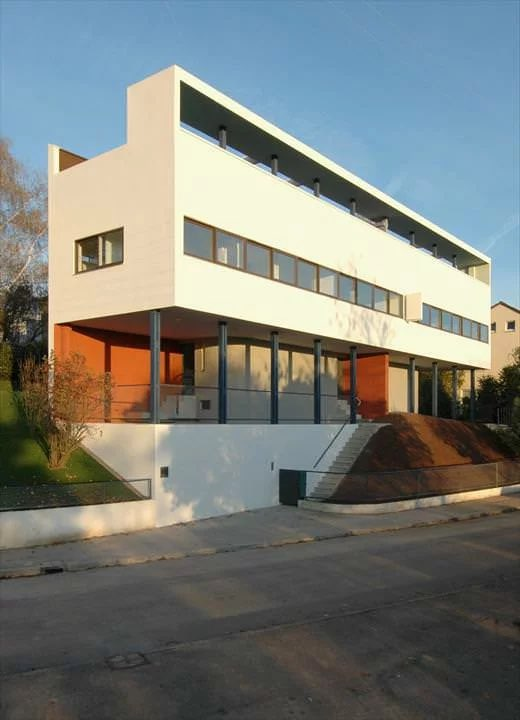

This image depicts a house that appears to be in a suburban setting. I chose this image because it has a lot of basic shapes and rectangles. I used the background layer to draw rectangles with the rectangle tool on adobe illustrator, outlining the horizon line and the ground that the house is standing on. During this process, I used the transform tool to play with the rectangle's perspective and angle it to align the picture. I continued to add rectangles using the tool to create the basic shapes of the house in the middle ground. I filled in the rest of the details like the windows in the foreground and pillars. I did have to play around with the layers because there were structures of the building that were hidden from view.
